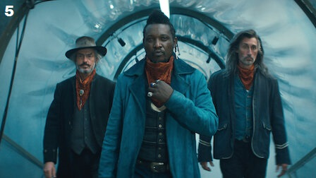
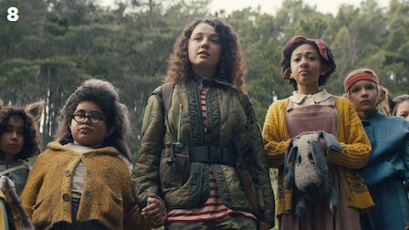

|
Cativeiro |
40-50 minutos |
Preso no zoológico, Gus conhece outros prisioneiros híbridos enquanto procura um jeito de fugir.
O General Abbot pressiona o Dr. Singh a providenciar uma cura. |
|
Entrando na Mata |
40-50 minutos |
Em meio aos planos para libertar Gus e os outros garotos, surge uma aliança complicada.
Desesperado por um avanço, o Dr. Singh faz um experimento arriscado. |
|
O Ovo ou a Galinha? |
40-50 minutos |
A expedição de Gus com o Dr. Singh leva a várias descobertas chocantes. Grandão e Aimee buscam refúgio e reforços.
Becky faz um novo amigo. |
|
Homem Mau |
40-50 minutos |
Grandão lida com os pecados do passado. Gus é alvo de raiva e desconfiança. Os temores de Rani se multiplicam.
Becky começa o treinamento básico. |
|  |
O Que é Preciso |
40-50 minutos |
O General Abbot faz de Gus um exemplo. O Dr. Singh fica obcecado por sua pesquisa antes de uma apresentação importante.
Becky encontra uma antiga rival. |
|
Início de um sonho, deu tudo certo |
40-50 minutos |
O zoológico vira uma zona de guerra quando a missão de resgate chega. Famílias se reencontram e se separam em meio ao caos. |
|
Vou te encontrar |
40-50 minutos |
Após uma jornada cheia de obstáculos em busca de um lugar seguro, Gus aprende mais sobre a própria origem e descobre
o que Birdie está disposta a fazer para protegê-lo. |
|  |
Balada dos Últimos Homens |
40-50 minutos |
Ao descobrir os planos do General Abbot, Gus e seus amigos se preparam para resistir e proteger as crianças híbridas,
custe o que custar. |